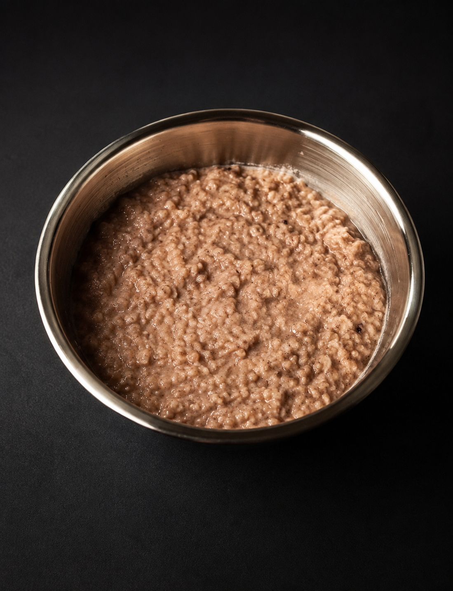

Riz au lait

Version protéinée
Ingrédients
- 50 g de riz
- 450 ml de lait
- 30 g de whey
Préparation
- Mettre les 50 g de riz dans une casserole avec 200 ml de lait.
- Faire chauffer jusqu'à ébullition.
- Lorsque le mélange commence à bouillir, ajouter les 250 ml de lait restants.
- Réduire à feu moyen et couvrir la casserole. Le mélange doit continuer à faire de légères bulles.
- Laisser cuire en mélangeant régulièrement avec un fouet pour éviter que le riz n'accroche au fond de la casserole.
- Poursuivre la cuisson pendant environ 30 minutes, voire un peu plus, jusqu'à obtenir la texture souhaitée.
- Retirer le riz au lait du feu et le verser dans un bol.
- Laisser refroidir quelques minutes, maximum 5 minutes, puis ajouter les 30 g de whey.
- Mélanger soigneusement jusqu'à ce que la whey soit complètement incorporée.
- Placer au réfrigérateur pendant au moins 3 heures avant de déguster.
Valeurs nutritionnelles (approx.)
Par portion : 500 kcal • 40 g protéines • 10 g lipides • 63 g glucides
Version classique
Ingrédients
- 50 g de riz
- 450 ml de lait
Préparation
- Mettre les 50 g de riz dans une casserole avec 200 ml de lait.
- Faire chauffer jusqu'à ébullition.
- Lorsque le mélange commence à bouillir, ajouter les 250 ml de lait restants.
- Réduire à feu moyen et couvrir la casserole. Le mélange doit continuer à faire de légères bulles.
- Laisser cuire en mélangeant régulièrement avec un fouet pour éviter que le riz n'accroche au fond de la casserole.
- Poursuivre la cuisson pendant environ 30 minutes, voire un peu plus, jusqu'à obtenir la texture souhaitée.
- Retirer le riz au lait du feu et le verser dans un bol.
- Laisser refroidir puis placer au réfrigérateur pendant au moins 3 heures avant de déguster.
Valeurs nutritionnelles (approx.)
Par portion : 390 kcal • 19 g protéines • 8 g lipides • 60 g glucides